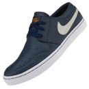

Tenis Nike
Nike Wardour Low para hombre tienen una parte superior de ante suave que proporciona un gran ajuste y una suela exterior de caucho fabricada con materiales reciclados que ofrece una excelente tracción de gran durabilidad.
Pie de página
Balon de Futbol
La Pelota Nike Strike está lista para la competición gracias a su cubierta duradera, con costuras a máquina. Su cámara de aire de goma reforzada ofrece una sensación consistente y retiene la forma, para que la puedas disfrutar por mucho más tiempo. Aumentá la precisión en tus pases y convertí los goles más espectaculares para convertirte en la figura de la cancha.
Pie de página
Bikini
Relájate y disfruta los días de playa con el Short Puma OCEAN LONG BOARDSH. Su diseño es clásico y sencillo, pero brinda gran comodidad para que goces cada momento. Presenta cordón en la cintura para que puedas regular el ajuste. Serán tu mejor opción para que domines las playas.
Contenido
Pie de página